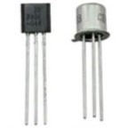

Sobre a Frizera Handmade Pedals
A Handmade Pedals surgiu da curiosidade de Henrique de aprender mais a fundo sobre pedais de guitarra, não apenas acerca do som, mas também sobre o processo de criação e fabricação. Fundada em 2023, a Frizera Handmade Pedals traz como compromisso, fazer pedais de guitarra que inspirem os músicos nas suas criações musicais.
Nossa missão é: "Proporcionar uma boa experiência sonora e pedais de alta qualidade de construção".
O atendimento possui padrão de excelência, garantindo qualidade e satisfação dos nossos clientes.
Nosso Estabelecimento
Nosso estabelecimento está localizado no coração da cidade.
Benefícios
- Atendimento aos clientes
- Espaço diferenciado
- Localização
- Profissionais qualificados